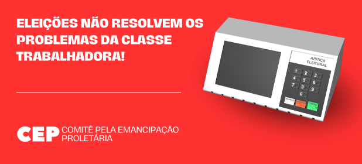

Eleições não resolvem os problemas da classe trabalhadora!
10 de julho de 2024 Trabalhadoras e trabalhadores do Brasil!
Vivemos uma grave crise do capitalismo em todo o mundo: vejam o número de desesperados por um lugar ao sol no mercado do emprego, vejam a imensidão de famintos que lutam por um pedaço de pão pelos grandes centros urbanos. Olhem a violência do crime organizado e da própria polícia que, em nome do Estado e da burguesia, assassinam nossos filhos sem dó nem piedade. Sem falar na crise climática que já é visível a olho nu para qualquer criança: a “tragédia” no Rio Grande do Sul não foi a primeira nem a única, outras virão por aí e, talvez, até piores. ...
Tudo isso faz com que os trabalhadores sofram de inúmeras formas: carestia, endividamento, sem falar na ansiedade e depressão, que já são causas de saúde que mais condicionam afastamentos do trabalho. Ou nos suicídios que se tornaram uma “pandemia” em todo o mundo...
Todos esses problemas têm por origem principal: essa sociedade de classes, baseada na exploração, que se chama capitalismo. Nela, os meios de produção (fábricas, máquinas, terras, bancos, comércio etc.) são de propriedade privada da burguesia, os donos do mundo, que acumulam riqueza e privilégios sem fim. Na outra ponta, está a classe trabalhadora: nós, os assalariados, informais e desempregados que lutam diariamente para manter uma vida precária, em que muitas vezes o objetivo é meramente tentar colocar comida na mesa para nossas crianças. Esse modo de produção gera constantemente crises e está destruindo a natureza em nome do lucro de alguns poucos!
E assim os anos passam e passam; gerações crescem e perecem. E qual é a sensação? De que nada muda em relação aos nossos interesses, que tudo está da mesma forma ou até pior para a classe trabalhadora. Governos saem e entram, com as velhas promessas de sempre: que irão melhorar a saúde, a educação, gerar empregos, combater a violência etc. Mas nada disso acontece para os trabalhadores. Mesmo depois de infinitas promessas, depois de campanhas eleitorais sem fim, os problemas da classe trabalhadora só se agravam.
As eleições não podem melhorar a vida da classe trabalhadora porque elas são uma das formas de manter e reproduzir a sociedade capitalista, ou seja, manter a exploração de classes e o Estado burguês. O Estado é um instrumento de exploração e opressão das classes dominantes sobre o proletariado e todo o conjunto da classe trabalhadora. As leis, a burocracia, as forças armadas, os três poderes (executivo, legislativo e judiciário) estão aí para servir aos capitalistas e não para resolver os problemas que afligem os operários e os trabalhadores assalariados em geral. E mesmo as poucas vitórias que às vezes conquistamos nessa “democracia” são sempre por meio de greves e manifestações de rua, independente de quem seja o prefeito ou presidente.
É por isso que, por exemplo, Bolsonaro e Lula, Nunes ou Boulos são essencialmente a mesma coisa em suas posições de classe; são eleitos para representar os interesses do Capital e das diversas frações de capitalistas que se alternam no poder, pois fazem parte da mesma estrutura de dominação, que gera inúmeras desigualdades. Aqueles candidatos que se dizem a favor do povo brasileiro e contra os políticos e o sistema vigente também fazem parte desse jogo, e tentam iludir os trabalhadores apontando falsos inimigos e soluções.
Trabalhadoras e trabalhadores, não devemos depositar ilusões sobre as eleições: elas não resolverão os problemas fundamentais das nossas vidas! É hora de a classe trabalhadora criar suas próprias formas de luta, suas próprias organizações; que elas sejam totalmente independentes da lógica burguesa, de sua estrutura, de seu financiamento e da corrupção que invade essa política rasteira que aí está.
Assim, um primeiro passo (pequeno, mas necessário) para negar toda essa patifaria das eleições é: votando nulo, não votando e, denunciando essa farsa eleitoral. Por quê? Porque nenhum candidato, por mais honesto e bem-intencionado que possa ser, poderá se contrapor à reprodução da exploração capitalista e das desigualdades sociais.
Entretanto, só isso não basta. Ora, já alcançamos a abundância, e diante de tanta riqueza acumulada, não deveria haver fome e desigualdade entre os seres humanos. No entanto, é o que o capitalismo produz incessantemente. Por isso, para construir uma vida digna, é preciso destruir o capitalismo, a burguesia e o seu Estado. É possível sim viver numa sociedade em que não exista nenhuma carência material, em que todos tenham moradia, alimentos, acesso a saúde, a cultura, a educação etc., uma sociedade em que não existam mais classes sociais nem Estado; em que todos se tornem produtores, e usufruam igualmente, da riqueza social sem serem explorados: uma sociedade comunista. Porém, é necessário, para garantir a passagem para esta nova sociedade, um período de transição, ou seja, uma revolução socialista para a expropriação dos meios de produção e destruição do poder político burguês e erigir a auto-organização dos trabalhadores, o trabalho livre e associado.
Nesse sentido, é vital que os operários e os trabalhadores em geral construam suas próprias organizações, que elas tenham total autonomia política, ideológica e financeira. Precisamos construir formas de lutas além destas que aí estão, lutas que só giram dentro do próprio Estado burguês; ou seja, estamos lutando dentro dos limites impostos pelo campo inimigo. A burguesia, seus políticos e intelectuais são nossos inimigos antagônicos, simplesmente porque nossos interesses e necessidades são estruturalmente diferentes das deles.
À luta trabalhadoras e trabalhadores!
Abaixo o Capital, o Estado e a exploração do trabalho!
Eleições não resolvem os problemas da classe trabalhadora!
Vamos construir nossas próprias armas na luta de classes!